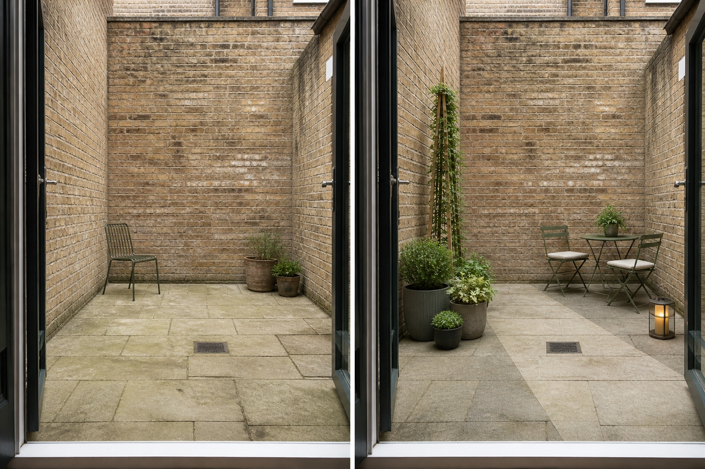

Keep the route visually quiet
Leave one continuous path from the doorway to the far side of the courtyard. Furniture and pots sit outside that route so the small floor does not become a slalom.
An enclosed courtyard is read almost all at once, often from inside the home. Protect the everyday route first, then organize seating, vertical interest, containers, and light around a single useful purpose.
Editorially reviewed August 13, 2026.
This AI-generated comparison is visual inspiration, not a measured layout, planting specification, drainage solution, structural assessment, product recommendation, or safety guarantee.

Leave one continuous path from the doorway to the far side of the courtyard. Furniture and pots sit outside that route so the small floor does not become a slalom.
A two-seat table creates a clear use without claiming the whole courtyard. Its position should still be tested against door swing, chair pull-back, access, and any required clearances.
One freestanding trellis and a restrained group of containers bring the eye upward. The concept avoids drilling into walls or assuming that fixings, loads, or climbing plants are suitable.
The concept keeps the brick walls, paving, doorway, floor level, drain, boundaries, and open sky. It does not widen the space, move services, add a roof, change drainage falls, or claim extra sunlight. Those fixed conditions should guide every real decision.
Measure doors, thresholds, gates, storage, furniture, chair movement, utilities, and the route needed for people and maintenance. Do not infer clearance from the image.
Record direct sun, reflected heat, shade duration, wind, overlooking, and views from inside across seasons before selecting furniture, screens, finishes, or plants.
Locate drains and existing falls, observe ponding and runoff, and keep containers from obstructing outlets. Persistent moisture or drainage changes need appropriate local advice.
Check leases, shared walls, fixings, lighting, electrical safety, fire access, container loads, plant suitability, mature size, toxicity, watering, and upkeep for the actual site.
Avoid scattering many small pots, blocking the only route, covering a drain, adding furniture for imaginary occasions, or using mirrors and wall fixings without checking safety and permission. Stop the visual plan and seek appropriate help if the idea depends on structural loads, altered drainage, permanent electrical work, overhead structures, fire routes, or wall changes.
Choose one main use, preserve one obvious walking route, group containers instead of scattering them, and use a limited material and color palette. Test the arrangement with movable items before fixing anything permanently.
Observe the courtyard's real sun, shade, reflected heat, wind, drainage, watering access, and winter exposure. Verify species, mature size, invasiveness, toxicity, and container requirements with reliable local sources.
Pause when it involves wall fixings, structural loads, drainage changes, permanent wiring, fire access, shared boundaries, leases, permits, or safety-critical clearances. The right next step is site-specific guidance, not a more detailed AI image.
Upload a level, wide photo to compare restrained visual directions while keeping the real boundaries and access in mind.
AI-generated visualizations are concepts. Verify measurements, site conditions, drainage, loads, local rules, product information, plant suitability, and professional requirements before buying or building.